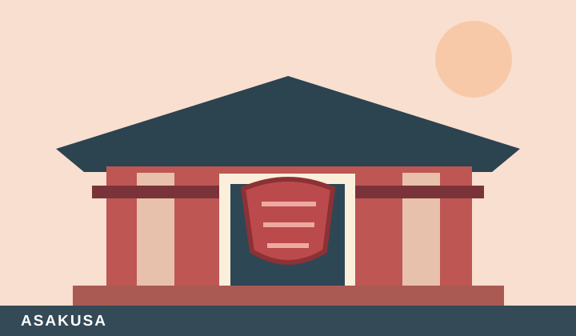

TOKYO SPOTS
東京推薦景點
第一次去東京，不必一次跑完所有地方。先認識四個不同風格的景點，再挑自己有興趣的區域。



小提醒
景點開放時間、門票及休館日可能變動，出發前請點上面的官方連結確認最新資訊。想看行程安排，可以前往 三日行程。
TOKYO SPOTS
第一次去東京，不必一次跑完所有地方。先認識四個不同風格的景點，再挑自己有興趣的區域。

景點開放時間、門票及休館日可能變動，出發前請點上面的官方連結確認最新資訊。想看行程安排，可以前往 三日行程。